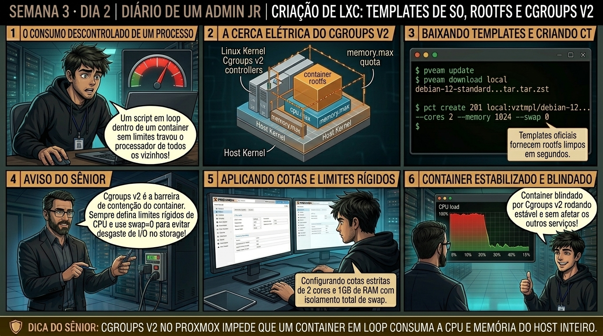

DIARIO DE UM ADMIN JR. | PROXMOX VE & PBS — DA BASE AO CLUSTER
🔗 Conecta com o Dia 1: Ontem você compreendeu a densidade do LXC. Hoje você provisiona containers na prática usando o comando pct create: configurando rootfs no ZFS e estabelecendo a cerca elétrica de recursos (CPU limits, CPU units e limites de RAM) via Cgroups v2.
🔓 Privilégio de hoje: Provisionamento e Controle de Recursos LXC. Você cria instâncias de containers e calibra cotas de processador e memória.
Semana 3 · Dia 2 | Nível Júnior — Containers de Sistema LXC
Criação de LXC: Templates de SO, Rootfs e Cgroups v2
Provisionando instâncias Debian, Ubuntu e Alpine com limites rígidos de recursos no Kernel
ANTES DE ALTERAR, OBSERVE. DEPOIS DE ALTERAR, VALIDE.

1. O chamado
Você recebeu o chamado #3002: 'Um container LXC de processamento de logs desgovernado consumiu 100% de CPU de todos os 32 núcleos do servidor físico, degradando outras aplicações. O chamado exige: (1) Provisionar um novo container CT 201 Debian 12 via terminal com pct create; (2) Fixar o teto máximo de CPU em exatamente 2 núcleos usando cpulimit; (3) Definir a prioridade de CPU relativa com cpuunits; e (4) Alocar 1024MB de RAM e 512MB de swap com Cgroups v2.'
💡 Passa o mouse nas palavras destacadas pra ver uma dica rápida — clica se quiser a explicação completa com analogia.
2. O sênior te conta
🧑🏫 antes dos termos técnicos, a história de hoje
Hoje o servidor de SSH de um container Nginx quebrou após um estagiário alterar o arquivo sshd_config. O Júnior tentou conectar via SSH, tomou conexão recusada e já ia deletar o container inteiro para recriar do zero.
Puxei ele pelo ombro e disse: 'Em container LXC, você nunca depende de SSH pra fazer resgate!'. Apresentei o comando pct enter 200. Expliquei que o Proxmox consegue injetar um shell root diretamente dentro dos namespaces do container, sem precisar de rede, porta aberta ou daemons ativos.
Entramos no container com pct enter, corrigimos o arquivo em 10 segundos e reiniciamos o serviço. O Júnior viu como o comando pct e os arquivos em /etc/pve/lxc/ dão controle total sobre o container direto pelo host. Vamos dominar o CLI do LXC agora.
3. Decodificador de conceitos
Clica em qualquer termo pra ver a definição completa e uma analogia do dia a dia:
4. Ferramentas e leitura da evidência
Comando / Parâmetro
O que observar e por que importa
pct create CTID TEMPLATE [OPTIONS]
Cria um novo container LXC especificando rootfs, recursos e rede.
pct config 201
Exibe o arquivo de configuração textual completo do container em /etc/pve/lxc/201.conf.
cat /sys/fs/cgroup/lxc/201/memory.max
Inspeciona o limite físico de memória imposto diretamente no Cgroups v2 pelo Kernel.
pct set 201 --cpulimit 2 --cpuunits 2048
Ajusta as cotas de CPU e prioridade relativa em tempo real a quente.
Resultado esperado: Container 201 criado no storage ZFS.
Por que fizemos isso: O comando pct create provisiona o container via CLI definindo rootfs, rede, memória e chaves SSH em um único comando automatizável.
Cilada comum: Digitar parâmetros de rede errados (ex: esquecer o /24 no IP), fazendo o container subir sem comunicação de rede.
Ação: Inspecione o arquivo de configuração do container em /etc/pve/lxc/201.conf.
cat /etc/pve/lxc/201.conf
Resultado esperado: Status alterado para 'running' em menos de 1 segundo.
Por que fizemos isso: Inspecionar /etc/pve/lxc/.conf valida as diretivas de montagem, limites de núcleos (cores) e cotas de swap salvas no pmxcfs.
Cilada comum: Editar o arquivo .conf do LXC enquanto o container está sendo criado ou restaurado.
Ação: Acesse o console root direto do container usando a ferramenta pct enter.
Por que fizemos isso: Usar pct enter abre um shell root direto dentro dos namespaces do container sem precisar de rede ou servidor SSH ativo.
Cilada comum: Depender de SSH para gerenciar containers; se o SSH do container quebrar, o pct enter é a ferramenta oficial de resgate.
Ação: Inicie e monitore o ciclo de vida do container com comandos pct start e pct status.
pct start 201 && pct status 201
Resultado esperado: Visualização de 512MB de RAM e 256MB de swap disponíveis dentro do ambiente isolado.
Por que fizemos isso: Controlar o ciclo de vida com pct start, pct stop e pct status valida a transição limpa de estados do container.
Cilada comum: Usar comandos de reboot dentro do container de forma repetida sem monitorar se os daemons internos encerraram graciosamente.
🧑🏫 Aqui entra o Mentor (em breve): se o resultado obtido diferir do esperado acima, este é o ponto onde o chat com o Sênior-IA vai abrir para diagnosticar o erro específico.
Ação: Audite a ocupação real de disco dentro do container com pct df.
Por que fizemos isso: Auditar a saída de recursos com pct df confirma a ocupação real do sistema de arquivos rootfs do container.
Cilada comum: Ignorar o crescimento de logs dentro do container até ele atingir 100% de ocupação do rootfs e parar de gravar transações.
6. Antes de ver as opções — tenta responder
🧠 Recall ativo: Qual é a diferença fundamental entre os parâmetros 'cpulimit' e 'cpuunits' na configuração de um container LXC no Proxmox VE?
O cpulimit define um teto rígido absoluto de fração de tempo de CPU (Hard Limit — por exemplo, cpulimit: 2 impede que o container use mais do que 2 cores de CPU somados, mesmo que o host esteja 90% ocioso). Já o cpuunits é um peso relativo de prioridade (Soft Limit — padrão 1024): quando há disputa ferrenha de processamento entre containers, o escalonador CFS distribui os ciclos de clock proporcionalmente ao valor de cpuunits de cada um.
QUESTÃO 1 de 3
7. Questão comentada — clica numa alternativa
Qual comando pct create provisiona corretamente o container 201 com Debian 12, 1GB de RAM, limite estrito de 2 cores de CPU e IP estático na bridge vmbr0?
💡 Analogia do Sênior para Fixar: Na arquitetura do Proxmox sobre Criação de LXC: Templates de SO, Rootfs e Cgroups v2: O KVM/QEMU opera como o motorista dedicado de cada passageiro, alocando recursos virtuais em contato direto com o kernel.
QUESTÃO 2 de 3 — cenário de erro real
7.1 Container ignorando limite de cores em teste de estresse
Um container com cores: 4 começou a rodar uma rotina de compilação C++ e consumiu 400% de CPU. O administrador queria que ele consumisse no máximo 1.5 cores:
$ pct set 201 --cores 4
(O parâmetro cores define a quantidade de vCPUs visíveis no /proc/cpuinfo, mas NÃO limita a taxa de clock total se cpulimit for omitido)
Qual parâmetro impõe a trava rígida de processamento para limitar a 150% de uso de CPU?
💡 Analogia do Sênior para Fixar: Ao diagnosticar problemas em Criação de LXC: Templates de SO, Rootfs e Cgroups v2: É como inspecionar as conexões do storage e o barramento PCIe antes de declarar falha de software.
QUESTÃO 3 de 3 — detalhe que confunde todo iniciante
7.2 O que acontece se um container LXC ultrapassar o limite de memória RAM configurado?
Uma aplicação Java dentro do container 201 tentou alocar 1.8GB de RAM, mas o container possui memory: 1024 e swap: 512:
Qual é o comportamento do Kernel Linux gerenciado pelos Cgroups v2?
💡 Analogia do Sênior para Fixar: A governança e resiliência em Criação de LXC: Templates de SO, Rootfs e Cgroups v2: Funciona como a política de contenção e redundância do datacenter, garantindo que o cluster nunca perca quorum.
8. Procedimento profissional
Baixe o template oficial do SO desejado com pveam download.
Crie o container definindo sempre --unprivileged 1 para segurança corporativa.
Configure --cores para expor o número de threads e --cpulimit para impor o teto rígido.
Defina --memory e --swap de acordo com o dimensionamento da aplicação.
Atribua a interface de rede --net0 apontando para a bridge vmbr0 com IP estático ou DHCP.
Inicie o container com pct start CTID e valide a saúde do serviço.
Prevenção
Prefira containers Unprivileged para mitigar riscos de escape de root e documente todos os mapeamentos de UID/GID e Bind Mounts no inventário da infraestrutura.
9. Validação e encerramento
Você domina a sintaxe do comando pct create para provisionamento de containers.
Você compreende o controle de recursos via Cgroups v2 (cpulimit vs cpuunits).
Você sabe como o OOM Killer atua de forma isolada dentro da hierarquia do container.
O ambiente foi provisionado e limitado com total conformidade de governança.
Rollback e limites
Para destruir o container de teste e liberar os dados do storage ZFS, execute pct destroy 201 --purge.
💡 Sobre repetição espaçada: O isolamento de segurança e permissões de usuários em containers será o foco amanhã no Dia 3 (Privilegiados vs Desprivilegiados).
10. Resposta final
Alternativa correta: B. A resposta correta é a B: o comando pct create provisiona o container extraindo a rootfs e aplicando limites de Cgroups e rede.
🔓 O que você desbloqueou hoje
Provisionamento de LXC dominado com perfeição! Amanhã, no Dia 3, você mergulhará no tópico mais crucial de segurança em containers: a diferença entre Containers Privilegiados vs Desprivilegiados e o mapeamento de UIDs (100000+) para impedir ataques de Container Escape.